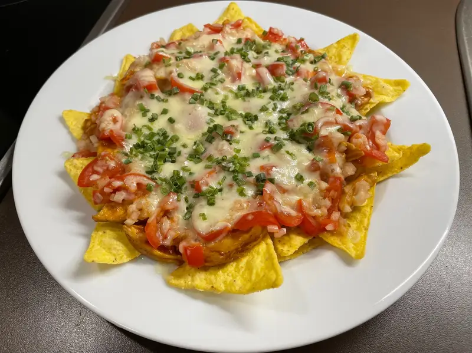

Microwave 4-minute BBQ Chicken Nachos Recipe

Indulge your taste buds in a burst of flavor with our Microwave 4-minute BBQ Chicken Nachos—a quick and savory delight that
combines the convenience of microwave cooking with the irresistible taste of barbecue goodness. Perfectly seasoned shredded chicken
meets a medley of melted cheeses, fresh veggies, and crunchy tortilla chips, creating a mouthwatering symphony of
textures and tastes in just a matter of minutes. Elevate your snacking experience with
this effortless and delicious twist on classic nachos, bringing the bold essence of barbecue to your fingertips with minimal effort and
maximum satisfaction.
Ingredients
- 1 cup rotisserie chicken(125 g), shredded
- 3 tablespoons BBQ sauce
- 2 large handfuls tortilla chips
- ¼ cup pico de gallo(60 g)
- 1 cup shredded cheddar cheese(100 g)
- ¼ cup green onion(35 g), thinly sliced
- guacamole, to serve
- sour cream, to serve
Steps
- 1. Mix the chicken with the barbecue sauce, then spread evenly over a bed of tortilla chips.
- 2. Spread the pico de gallo, cheese, and green onions evenly on top, then microwave for about 1-3 minutes until the cheese is melted and bubbly.
- 3. Dollop with some guacamole and sour cream, then serve.
- 4. Enjoy!